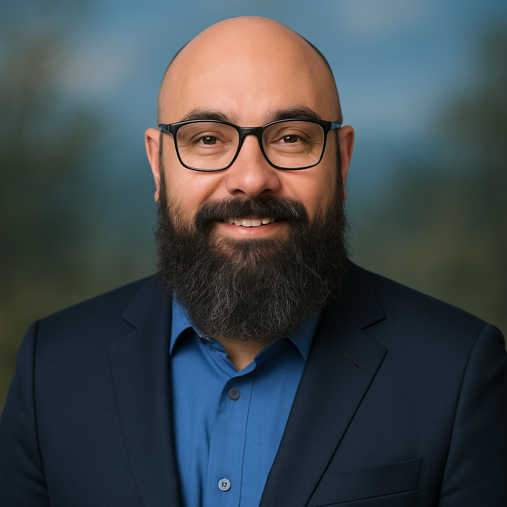

Juan Carlos Lopez

💼 Executive Summary
Experienced IT Professional with 16+ years in desktop support, service desks, and data centers, now pivoting into Front-End Web Development.
Skilled in HTML, CSS, and JavaScript, with a strong foundation in troubleshooting, customer service, and team collaboration.
Currently building a robust portfolio through hands-on web development projects.
🛠️ Technical Skills
Languages & Tools: HTML, CSS, JavaScript
Frameworks & Libraries: Bootstrap, React (in progress)
Version Control:GitHub
Soft Skills: Bilingual (English & Spanish), Customer Service, Troubleshooting, Communication, Team Collaboration
🎓 Education
Emily Giffith High School
High School Equivalency Diploma
Denver, CO
Graduated 1996
Udemy Online
The Complete Web Development Bootcamp
Course Highlights:
- HTML, CSS, JavaScript fundamentals
- Responsive design principles
- Accessibility best practices
- Modern front-end development techniques
- Currently enrolled and actively building projects
- Gaining hands-on experience in responsive design, accessibility, and modern front-end practices
Expected completion: 12/2025
Course Link
💻 Web Development Projects
Check out my portfolio showcasing my web development projects:
HTMLPortfolio
🧑💼 Professional Experience (Selected Highlights)
Concentrics Inc | Desktop IT Support Specialist | 06/24 - 07-25
- Supported multiple clients including hospitals and law firms across Colorado
- Provide technical support to end-users via phone, email, and in-person
- Managed onboarding/offboarding via Microsoft Azure and Active Directory
- Installed configure, and maintain operating systems and software applications
Builders FirstSource | Helpdesk Technician | 10/23 – 03/24
- Tier I/II support for internal employees
- Resolved connectivity issues and managed user accounts via AD and Exchange
OmniTrax | Desktop Support | 02/23 – 08/23
- Deployed, upgraded, and repaired desktop systems; managed hardware inventory and asset tracking
- Performed daily administration of user accounts and computer devices across the organization
- Daily administration and maintenance of user accounts
DaVita Kidney Care | Desktop Support | 04/2021 – 08/2022
- Provided remote and on-site support for clinical applications and devices
- Used Ivanti for software deployment and ServiceNow for ticket tracking
- Collaborated on mid-to-high level technical projects across teams
Dish Network - Desktop Support Technician / Data Center Engineer (02/2018 – 06/2020)
- Managed cable routing, server installations, and SFP replacements in data centers
- Supported executives and maintained hardware inventory
- Drafted knowledge base entries and resolved tickets in ServiceNow
Additional Experience
- Customer Service
- Team Player
- HTML, CSS, JavaScript
- Bilingual (Spanish/fluent)
- Communication Skills
- Time Management
- Problem Solving
- Attention to Detail
Other
Feel free to contact me for a full copy!
Contact Me